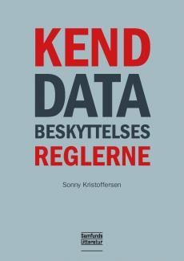
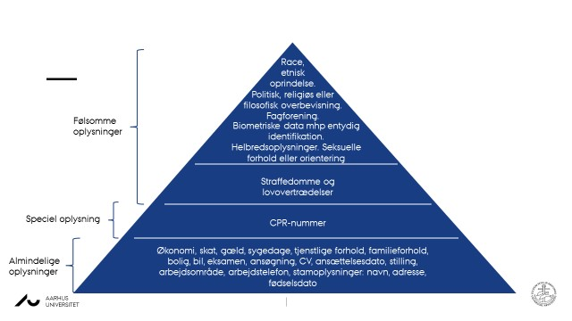

Kapitel 10 Databeskyttelse Premium
 http://samfundslitteratur.dk/bog/kend-databeskyttelsesreglerne15
10.2 Databeskyttelse ved behandling af personoplysninger Premium

Enhver person har således ret til beskyttelse af sine personoplysninger, og enhver, der behandler personoplysninger om andre i ikke-privat sammenhæng, er forpligtet til at iagttage disse rettigheder og til at beskytte disse personoplysninger.
Disse rettigheder og forpligtelser går samlet under betegnelsen “databeskyttelse”.
Enhver behandling af andres personoplysninger, der ikke sker i en rent privat sammenhæng, skal ske i overensstemmelse med reglerne på databeskyttelsesområdet, jf. databeskyttelsesforordningen (også kaldet; ”GDPR” General Data Protection Regulation), som har direkte virkning i Danmark.

Den supplerende databeskyttelseslovs formål er identisk med formålet i databeskyttelsesforordningen, nemlig beskyttelse af fysiske personer i forbindelse med behandling af personoplysninger og fri udveksling af personoplysninger i EU.
Når en virksomhed behandler personoplysninger er den underlagt reglerne i persondataforordningen og databeskyttelsesloven.
Persondataforordningen pålægger virksomhederne en række forpligtelser, når de behandler personoplysninger.
Omvendt får den, der behandles oplysninger om (den registrerede) en række rettigheder.
Video: Introduktion til databeskyttelsesloven
Video: Hvad er persondata?
10.3 Hvad er ”behandling” i persondataretten? Premium

Enhver form for oplysning, der knytter sig til en bestemt fysisk person, som gør personen identificerbar.
Det kan fx være et personnummer, en bopælsadresse, et journalnummer, et bilregistreringsnummer, en IP-adresse osv.
Hvis oplysninger om fysiske personer er fuldstændig anonymiserede, er der ikke tale om personoplysninger.
Ifølge databeskyttelsesforordningens artikel 4, nr. 2, skal begrebet ”behandling” forstås som enhver aktivitet eller række af aktiviteter - med eller uden brug af automatisk behandling - som personoplysninger eller en samling af personoplysninger gøres til genstand for, f.eks.:
indsamling,
registrering,
organisering,
systematisering,
opbevaring,
tilpasning eller ændring,
genfinding,
søgning,
brug,
videregivelse ved transmission,
formidling eller enhver anden form for overladelse,
sammenstilling eller samkøring,
begrænsning,
sletning eller tilintetgørelse.
Begrebet “automatisk databehandling” er sammenfaldende med “edb” eller “elektronisk behandling”, som blev anvendt i dagældende databeskyttelsesdirektivets artikel 3, stk. 1.
Bestemmelsen i databeskyttelsesforordningens artikel 2 svarer således til det tidligere gældende databeskyttelsesdirektivs materielle anvendelsesområde.
Privates aktiviteter på Facebook er ikke omfattet af databeskyttelsesforordningen.

Anderledes med fansider på Facebook, hvor Facebook og administratoren af en fanside har et fælles dataansvar for behandlingen af personoplysninger, som bliver indsamlet i forbindelse med besøg på den pågældende fanside.
Behandlingsbegrebet skal således forstås meget bredt og dækker over enhver form for håndtering af personoplysninger, såsom:
Indsamling
Registrering
Systematisering
Opbevaring
Søgning
Tilpasning
Sletning
Videregivelse
10.4 Opdelingen af personoplysningerne Premium
Databeskyttelsesforordningen opdeler personoplysninger i tre typer:
Almindelige ikke-følsomme oplysninger,
Særlige kategorier af oplysninger (følsomme oplysninger) og
Oplysninger om straffedomme og lovovertrædelser eller tilknyttede sikkerhedsforanstaltninger.
Der findes to kategorier af personoplysninger:
Almindelige ikke-følsomme personoplysninger fx:
- Fx navn, adresse, telefonnummer, køn, alder
Følsomme personoplysninger fx:
Race og etnisk baggrund
Politisk, religiøs og filosofisk overbevisning
Fagforeningsmæssigt tilhørsforhold, helbred, seksuel orientering
Video: Kategorier af personoplysninger
| Følsomme personoplysninger | Almindelige personoplysninger | |
| Race, etnisk oprindelse, politisk, religiøs el. filosofisk overbevisning, fagforeningsmæssige tilhørsforhold, genetiske data, biometriske data mhp. entydig identifikation, helbredsoplysninger, seksuelle forhold eller orientering | Straffedomme og lovovertrædelser | Væsentlige sociale problemer, andre rent private forhold, økonomi, skat, gæld, sygedage, tjenstlige forhold, familieforhold, bolig, bil, eksamen, ansøgning, CV, ansættelsesdato, stilling, arbejdsområde, arbejdstelefon, navn, adresse, fødselsdato |
| Kilde: | ||
| Databeskyttelsesforordningen |


En anden måde at se de forskellige kategorier af personoplysninger på. Jo højere oppe i trekanten oplysningerne er, desto strengere betingelser for at behandle dem.
10.6 Hvornår kan der ske behandling af følsomme oplysninger? Premium
Særlige kategorier af personoplysninger (følsomme personoplysninger) følger af databeskyttelsesforordningens artikel 9, stk. 1.
Følsomme personoplysninger er udtrykkelig afgrænset i databeskyttelsesforordningen, og adgangen til at behandle sådanne oplysninger er snævrere end ved almindelige personoplysninger.
Følsomme oplysninger er nærmere oplysninger om:
Race og etnisk oprindelse
Politisk overbevisning
Religiøs eller filosofisk overbevisning
Fagforeningsmæssige tilhørsforhold
Genetiske data
Biometriske data med henblik på entydig identifikation
Helbredsoplysninger
Seksuelle forhold eller seksuel orientering
Kun de oplysninger, der er nævnt ovenfor, er følsomme personoplysninger
Af databeskyttelsesforordningen fremgår det, hvornår der må ske behandling af følsomme oplysninger.
De følsomme oplysninger omfattet af databeskyttelsesforordningens artikel 9, stk. 1, må dog behandles, hvis der er hjemmel til det i forordningen, hvilket særligt vil sige i databeskyttelsesforordningens artikel 9, stk. 2, litra a-j:
Behandling af de pågældende oplysninger kan således ske på betingelse af, at den registrerede har givet et klart og udtrykkeligt samtykke til behandling af sådanne personoplysninger (litra a)
Der skal således være tale om en frivillig, specifik og informeret viljestilkendegivelse.
Et samtykke skal meddeles på en sådan måde, at det klart og utvetydigt fremgår, at den registrerede har meddelt sit samtykke til behandlingen.
Herudover skal samtykket være udtrykkeligt.
Heraf følger, at den dataansvarlige ikke vil kunne opnå stiltiende eller indirekte tilslutning til behandling af de i artikel 9, stk. 1 nævnte oplysninger.
Et egentligt krav om skriftlighed følger ikke af bestemmelsen.
Der bør dog i videst muligt omfang søges indhentet et skriftligt samtykke fra den registrerede, idet der herved opnås klarhed omkring samtykkets rækkevidde.
Det kan skyldes følgende begrundelser:
At behandling er nødvendig for at overholde den dataansvarliges eller den registreredes arbejds-, sundheds- og socialretlige forpligtelser og specifikke rettigheder, for så vidt den har hjemmel i EU-retten eller medlemsstaternes nationale ret eller en kollektiv overenskomst i medfør af medlemsstaternes nationale ret, som giver fornødne garantier for den registreredes grundlæggende rettigheder og interesser (litra b),
At behandling er nødvendig for at beskytte den registreredes eller en anden fysisk persons vitale interesser i tilfælde, hvor den registrerede fysisk eller juridisk ikke er i stand til at give samtykke (litra c),
At behandling foretages af en stiftelse, en sammenslutning eller et andet organ, som ikke arbejder med gevinst for øje, og hvis sigte er af politisk, filosofisk, religiøs eller fagforeningsmæssig art, som led i organets legitime aktiviteter og med de fornødne garantier, og på betingelse af at behandlingen alene vedrører organets medlemmer, tidligere medlemmer eller personer, der på grund af organets formål er i regelmæssig kontakt hermed, og at personoplysningerne ikke videregives uden for organet uden den registreredes samtykke (litra d),
At behandling vedrører personoplysninger, som tydeligvis er offentliggjort af den registrerede (litra e),
At behandling er nødvendig, for at retskrav kan fastlægges, gøres gældende eller forsvares, eller når domstole handler i deres egenskab af domstol (litra f),
At behandling er nødvendig af hensyn til væsentlige samfundsinteresser på grundlag af EU-retten eller medlemsstaternes nationale ret og står i rimeligt forhold til det mål, der forfølges, respekterer det væsentligste indhold af retten til databeskyttelse og sikrer passende og specifikke foranstaltninger til beskyttelse af den registreredes grundlæggende rettigheder og interesser (litra g),
At behandling er nødvendig med henblik på forebyggende medicin eller arbejdsmedicin til vurdering af arbejdstagerens erhvervsevne, medicinsk diagnose, ydelse af social- og sundhedsomsorg eller -behandling eller forvaltning af social- og sundhedsomsorg og -tjenester på grundlag af EU-retten eller medlemsstaternes nationale ret eller i henhold til en kontrakt med en sundhedsperson og underlagt de betingelser og garantier, der er omhandlet i databeskyttelsesforordningens artikel 9, stk. 3 (litra h),
At behandling er nødvendig af hensyn til samfundsinteresser på folkesundhedsområdet (litra i), eller
At behandling er nødvendig til arkivformål i samfundets interesse, til videnskabelige eller historiske forskningsformål eller til statistiske formål på grundlag af EU-retten eller medlemsstaternes nationale ret og står i rimeligt forhold til det mål, der forfølges, respekterer det væsentligste indhold af retten til databeskyttelse og sikrer passende og specifikke foranstaltninger til beskyttelse af den registreredes grundlæggende rettigheder og interesser (litra j).

| Følsomme personoplysninger | Personoplysninger med særlig beskyttelse | Andre personoplysninger |
|
Som udgangspunkt ikke, medmindre: - Der er givet samtykke - Det sker for at sikre personens vitale interesser, og der ikke kan indhentes samtykke (Sygdomsreglen) - Der er tale om en forening der behandler oplysningerne som led i deres aktiviteter - Hvis man selv har offentliggjort oplysningen - For at kunne fastlægge et retskrav - For at kunne overholde arbejdsretlige forpligtelser |
Hvis: - Der er givet samtykke - Det følger af lovgivningen - Det sker som til statistiske formål - Et af kriterierne fra de følsomme oplysninger er opfyldt |
Hvis: - Der er givet samtykke - Det sker for at opfylde en kontrakt - Det sker for at opfylde en retlig forpligtelse - Det sker for at sikre personens vitale interesser, og der ikke kan indhentes samtykke (Sygdomsreglen) - Det sker for at udføre en opgave i samfundets interesse - Der er en legitim interesse hos virksomheden) |
| Kilde: | ||
| Datatilsynet |
10.7 Virksomhederne skal overholde god databehandlingsskik Premium

God databehandlingsskik er en retlig standard, som udfyldes af Datatilsynet.
Begrebet indebærer bl.a., at behandlingen af oplysninger skal være rimelig og lovlig.
Standarden anses efter praksis fra Datatilsynet for bl.a. at omfatte krav til den dataansvarlige om forudgående underretning af den registrerede om visse behandlingsaktiviteter, en pligt til at notere den registreredes indsigelser i forhold til rigtigheden af de registrerede oplysninger og underretning af berørte personer ved brud på datasikkerheden.
God databehandlingsskik supplerer således navnlig databeskyttelseslovens regler om den registreredes rettigheder:
Persondatabehandlingen skal være lovlig og rimelig.
Formålet skal være sagligt.
Oplysningerne skal være korrekte og opdaterede.
Ukorrekte oplysninger bør slettes eller rettes - også når der ikke længere er behov for dem i forhold til det definerede formål.
Video: God behandlingsskik
10.9 Nærmere om kravet til samtykke for, at der kan behandles personoplysninger Premium
Video: Samtykket
Video: Behandlingshjemlen
Ved spørgsmålet om, hvornår personoplysninger kan behandles, er den altovervejende hovedregel, at personoplysninger vil kunne behandles, såfremt der er det fornødne samtykke fra den registrerede til behandlingen.
Det følger af databeskyttelsesforordningens artikel 7, stk. 3, at den registrerede til enhver tid har ret til at trække sit samtykke tilbage.
Tilbagetrækning af samtykke berører ikke lovligheden af den behandling, der er baseret på samtykke inden tilbagetrækningen.
Inden der gives samtykke, skal den registrerede oplyses om, at samtykket kan trækkes tilbage.
Det skal være lige så let at trække sit samtykke tilbage som at give det.
Oplysning om, at samtykket kan trækkes tilbage er således nu efter 25. maj 2018 en gyldighedsbetingelse for det afgivne samtykke.
For både almindelige og følsomme data gælder i begge sektorer privat som offentlig, at der kan ske behandling, såfremt den registrerede samtykker hertil.
Tidspunkt
Den registreredes samtykke skal være på plads inden, den dataansvarlige påbegynder behandling af de oplysninger, som samtykket angår.
Formkrav

Et samtykke kan både afgives mundtligt, skriftligt og digitalt.
Det afgørende er, at den registreredes erklæring eller handling tydeligt tilkendegiver den registreredes hensigt, og et samtykke kan derfor ikke gives stiltiende eller være underforstået.
Den dataansvarlige skal endvidere som nævnt kunne bevise, at den registrerede har givet sit samtykke til behandlingen af personoplysninger og kunne bevise, hvad det meddelte samtykke omfatter.
Et samtykke bør derfor bør i videst mulige omfang afgives skriftligt eller på anden måde, som kan bevises.
Kan den dataansvarlige ikke bevise, at der foreligger et gyldigt samtykke, er konsekvensen, at samtykket ikke kan anses for at være i overensstemmelse med forordningen og kan dermed ikke udgøre et lovligt behandlingsgrundlag.
Frivilligt
Et samtykke skal være frivilligt. Formålet med et samtykke er at give de registrerede et valg og ikke mindst kontrol over personoplysninger om dem selv.
Et samtykke anses derfor ikke for at være afgivet frivilligt, hvis den registrerede ikke har et reelt eller frit valg. Et samtykke må f.eks. ikke være afgivet under tvang.
Dette gælder, uanset om det er den dataansvarlige eller andre, der udøver tvang over for den registrerede.
Den omstændighed, at den registrerede er i den dataansvarliges varetægt, f.eks. indsat i fængsel, undergivet værnepligt mv., udelukker ikke, at vedkommende kan give et gyldigt samtykke.
Eksempel - En privat sportsforening beder sine medlemmer om samtykke til at tage portrætbilleder af dem for at offentliggøre billederne på sportsforeningens hjemmeside.
Medlemmerne anses for at have et reelt og frit valg, så længe et nægtet samtykke ikke medfører negative konsekvenser (f.eks. ekskludering af foreningen).16

10.10 Hvad er den registreredes rettigheder? Premium
Når der behandles oplysninger om en person, kaldes personen “den registrerede”.
Den registrerede har i den forbindelse en række rettigheder over for den dataansvarlige, som behandler ens oplysninger.18
Når den registreredes oplysninger bliver behandlet, bør den registrerede først gøre sig klart, hvem der faktisk er ansvarlig for den registrerede oplysninger.
Det er i denne forbindelse afgørende, hvem der er den “dataansvarlige”.
Den dataansvarlige er den person, virksomhed, forening eller myndighed m.v., som afgør, med hvilket formål og med hvilke hjælpemidler den registreredes personoplysninger behandles.
“Databehandleren” er den, der behandler den registreredes personoplysninger på vegne af den dataansvarlige.
Databeskyttelsesreglerne indeholder en række rettigheder, som den registrerede kan påberåbe sig over for den dataansvarlige.
Som registreret har man således blandt andet følgende persondatarettigheder.
10.10.1 Ret til indsigt Premium

Den registrerede har ret til at se de personoplysninger, den dataansvarlige behandler om den registrerede, og få en række oplysninger om behandlingen.19
Det fremgår f.eks. af databeskyttelsesforordningens præambelbetragtning (forord) nr. 63, at en registreret bør have ret til indsigt i personoplysninger, der er indsamlet om vedkommende, og til let og med rimelige mellemrum at udøve denne ret med henblik på at forvisse sig om og kontrollere en behandlings lovlighed.
Dette omfatter registreredes ret til indsigt i deres helbredsoplysninger, f.eks. data i deres lægejournaler om diagnoser, undersøgelsesresultater, lægelige vurderinger samt enhver behandling og ethvert indgreb, der er foretaget.
10.10.5 Ret til dataportabilitet Premium

Retten til dataportabilitet indebærer en ret for den registrerede til at modtage egne personoplysninger, som den registrerede har givet til den dataansvarlige, i et struktureret, almindeligt anvendt og maskinlæsbart format til personlig brug uden hindring.
Den registrerede har i visse tilfælde ret til at modtage sine personoplysninger og til at anmode om, at personoplysningerne overføres fra én dataansvarlig til en anden.
Ved forordningens artikel 20 er der dermed indført en ny rettighed for den registrerede til dataportabilitet, som indebærer en ret til i visse tilfælde at modtage personoplysninger - som vedkommende har givet til en dataansvarlig - om sig selv i et struktureret, almindeligt anvendt og maskinlæsbart format.
Herudover indebærer retten til dataportabilitet en rettighed for den registrerede til i visse tilfælde at få transmitteret disse oplysninger om sig selv fra én dataansvarlig til anden uden hindring fra den dataansvarlige, som personoplysningerne er blevet givet til.
Formålet med denne nye rettighed er at øge den registreredes kontrol over egne personoplysninger ved at fremme mulighederne for let at få flyttet, kopieret eller overført vedkommendes personoplysninger til sig selv eller fra én tjenesteudbyder til en anden.
Retten til dataportabilitet finder ikke anvendelse på behandling, der er nødvendig for at udføre en opgave i samfundets interesse, eller som henhører under offentlig myndighedsudøvelse, som den dataansvarlige har fået pålagt, jf. databeskyttelsesforordningens artikel 20, stk. 3, 2. pkt.
Video: Indsigtsbegæring
Følgende afsnit om databeskyttelsesreglerne bygger på Sonny Kristoffersen: ”Kend databeskyttelsesreglerne”, 2019, Samfundslitteratur.↩
Jf. Datatilsynets og Justitsministeriets pjece om vejledning om Samtykke, november 2017, s. 4.↩
Jf. Datatilsynets og Justitsministeriets pjece om vejledning om Samtykke, november 2017, s. 18.↩
F.eks. it-systemer, men det kan også være tv-overvågningsbilleder, hvor den registrerede optræder eller oplysninger om den registreredes teletrafik mv.↩
Jf. betænkning nr. 1565/2017, afsnit 4.7.3.1. Ret til sletning - artikel 17, stk. 1.↩
Følgende afsnit om spørgsmål og svar, jf. Datatilsynets hjemmeside: https://www.datatilsynet.dk/generelt-om-databeskyttelse/ofte-stillede-spoergsmaal/.↩
Følgende podcast er hentet fra Datatilsynets hjemmeside.↩